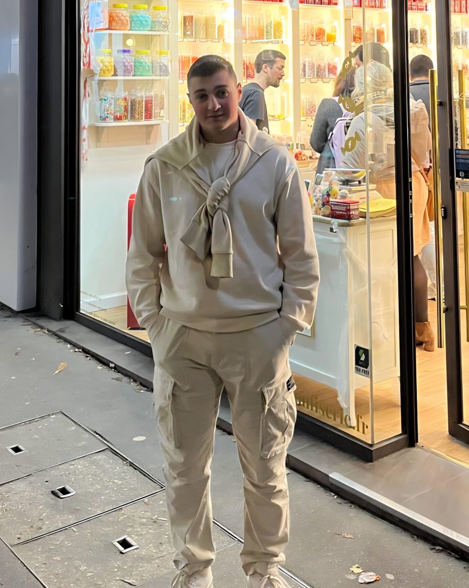
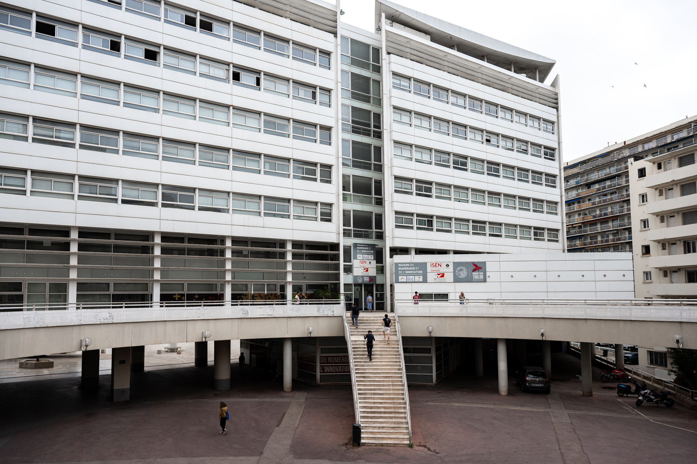

Derrière chaque service que nous proposons se cache une équipe dévouée de professionnels, chacun apportant son expertise unique et son enthousiasme à notre entreprise.

Fondateur / Etudiant ISEN Toulon dans l'ingénierie et du numérique

Bonjour ! Je suis actuellement élève en cycle préparatoire à l'ISEN Toulon. Ce site est l'aboutissement de mon projet de SHES (Science Humaine Economique et Sociale).
Je suis actuellement élève en cycle préparatoire à l'ISEN Toulon. Ce site a été réalisé dans le cadre de mon projet SHES.
En tant que futur ingénieur, il me semble indispensable de ne pas seulement créer des technologies, mais de comprendre leur impact global. Pour ce projet, j'ai mobilisé les méthodes de recherche apprises durant ma première année :
Au-delà de mes études, je suis un passionné d'aquariophilie. Dans ce loisir, on apprend vite que pour maintenir la vie, la technologie est omniprésente : pompes, systèmes de filtration haute performance, éclairages LED pilotés et capteurs de température. Sans cette technologie, l'écosystème s'effondre. Cependant, l'aquariophilie m'a aussi appris une leçon de sobriété : plus on ajoute de gadgets inutiles, plus on risque de déséquilibrer le milieu naturel. C'est exactement le reflet du débat actuel sur notre planète :
J'ai conçu ce projet pour qu'il soit un véritable support de veille technologique. Son but est de :